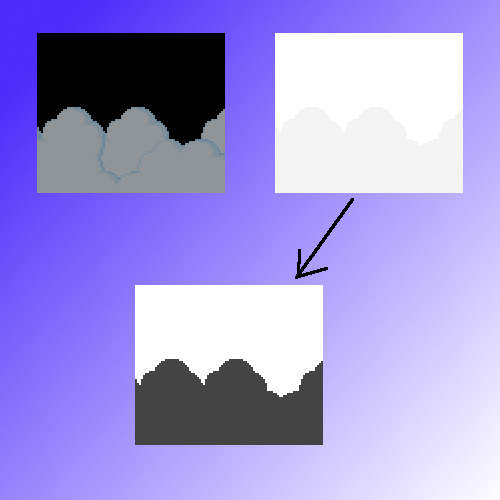
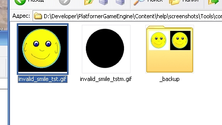
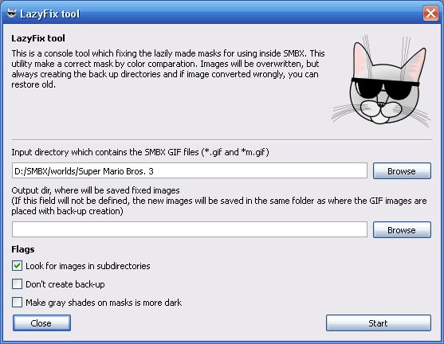

LazyFixTool - is a powerful utility for
automatically fixing lazily-made GFXes:
It converts all BMPs into the GIF format, and corrects the mask into a valid
image.
Lazily-made / Noob-made / noob drawing / result of lazy effort - These are pairs of a image and mask, created via simple copies of the original image, with a white color.
A mask is an Alpha-channel coding image. Each Pixel of the mask defining the
level of opacity of the same pixel on the source image:
Each Pixel of a mask - is a value of opacity for each pixel of the source image:


And target image will be valid (example placed over other image):


You will get broken image (example placed over other image):

This means - the colors of the mask applied on the image as alpha-channel values,
and you got the broken image.
Because the lazily-made image is a copy of source image, we must compare all pixels between image and mask.
If pixels are equal - fill pixel on the mask by black color.
These operations made the right mask from broken:
=>
LazyFix tool - is a console tool, you need open the terminal or command line and change directory to the LazyFix tool.
This utility fixes all SMBX64 graphics (GIF with mask images) in an selected folder and (optionally) all graphics inside the subfolders.
The mask must be placed WITH its image, as the fixing process is based on calculating broken pixels by comparing between the pixels of both images.
For fixing graphics which are in one folder:
LazyFixTool C:\SMBX\worlds\episode1\level3
For fixing graphics of an whole episode, you need use the "-W" switch:
LazyFixTool -W C:\SMBX\worlds\episode1
Also you can fixi gray-colored mask which created for use semi-transparent effects. This command make the gray down of the gray-scaled masks:
LazyFixTool -G C:\SMBX\worlds\episode1\level5

Note: After work of tool will be created the "_backup" directory where will be placed broken images before run fixing. If tool made errors aftrer it's worls, you can always restore your old images from backup directory.
You can run fixing without creation of backup directories, if you will apply "-N" switch, but you will can't fix your old images, and you need draw mask manually:
LazyFixTool -N C:\SMBX\worlds\episode1\level5
Also you can simply drag image files into LazyFix application, and it will run fix of these images
Before fixing

After fix:

The Editor have a GUI shell for set properties to the lazyFix tool.
For open them, try the menu item: "Tools -> External tools -> Fix Lazily-made graphics (LazyFix tool)"
And you can configure properties for setup the batch fixing.

When you press "Start", will be opened the "Developement Console" window, where you will see the fixing process.
Copyright © 2014-2015 Platformer Game Engine by Wohlstand project. All rights reserved.